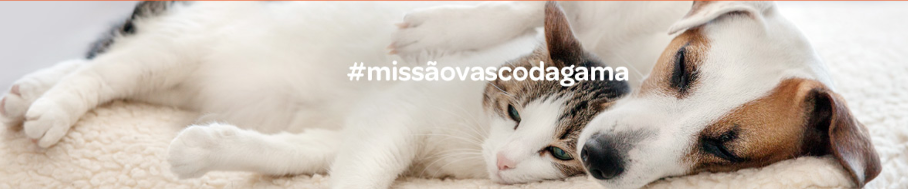

" Temos como missão, Salvar vidas todos os dias. "
Duas unidades, para prestar o melhor serviço de saúde veterinário
Hospital Veterinário do Parque das Nações/Expo, está situado numa zona de fácil acesso para toda a região metropolitana de Lisboa, concelho de Loures,......
A Clínica do Forte da Casa/Póva de Santa Iria, serve toda região oriental da grande Lisboa, tendo acessos facilitados para o concelho de Loures e Vila Franca de Xira, respondendo às....
Urgências 24h com Médico Veterinário permanente
Urgências 24h com Médico Veterinário permanente O Hospital Veterinário Vasco da Gama assegura a presença permanente de um médico Veterinário 24 horas por dia 365 dias por ano de forma a garantir uma resposta rápida e adequada a qualquer situação de urgência que o seu animal possa requerer.
O nosso serviço de urgências assegura a realização de consultas, meios de diagnóstico e cirurgias de urgência 24 horas por dia.
Para além da presença contínua de um Médico Veterinário pode contactar-nos também através dos telefones 24h: